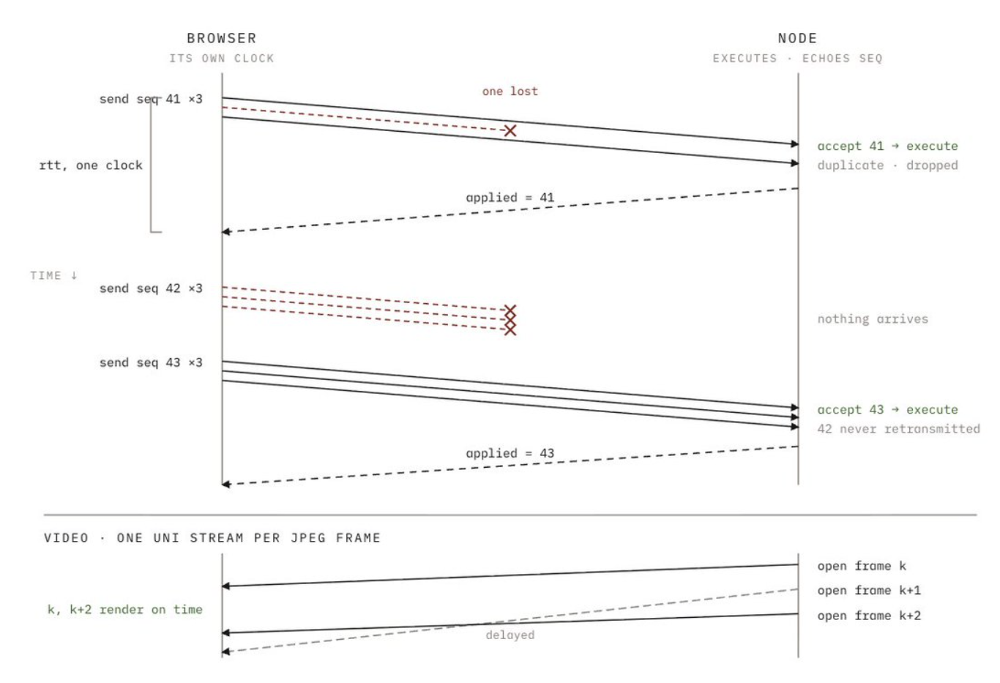

Interlatent turns robot demonstrations into training-ready datasets. I worked on teleoperation and agent validation across NORI, Dimensional OS, I2RT YAM, SO-101, and Axol.
Teleoperation Architecture & Hardware Integration
WebXR, inverse kinematics, QUIC & robot hardware
Background
- Needed a shared teleoperation and recording workflow across robots with different joint units, kinematics, cameras, and onboard computers.
Technical Approach
- Integrated CAN, cameras, and host hardware on Raspberry Pi 5 and Jetson; validated clutch mapping, IK, and independent arm control in MuJoCo before live testing.
- Traced WebXR poses through browser IK and QUIC delivery to the robot's command arbiter, freshness checks, joint limits, and motion clamps.
- Evaluated command and camera timing, plus the separate gRPC recording path that spools acknowledged data into LeRobot episodes.
Results
- Helped expand control from one robot to a five-robot fleet through shared interfaces and hardware-specific configuration.
- Identified capture and encoding bottlenecks and documented changes to improve control timing and recording turnaround.


Agent Validation & Reliability Testing
Visual grounding, annotation consistency & workflow reliability
Background
- Dataset agents needed to describe robot recordings and annotate task progress accurately before their outputs could guide training-data selection.
Technical Approach
- Built an eight-area test matrix using cloth-folding and cable-untangling datasets, with explicit prompts, pass criteria, and recorded observations.
- Checked claims against camera frames and state tracks; repeated phase-segmentation and outcome prompts to measure consistency.
- Tracked annotation versions, cancellation, cost, and unintended writes alongside answer quality.
Results
- Exposed ungrounded visual claims, inconsistent phase boundaries, and background writes after cancellation.
- Delivered a reproducible failure log and prioritized fixes for visual evidence, write isolation, and cancellation; confirmed stable outcome labels across three repeated checks.